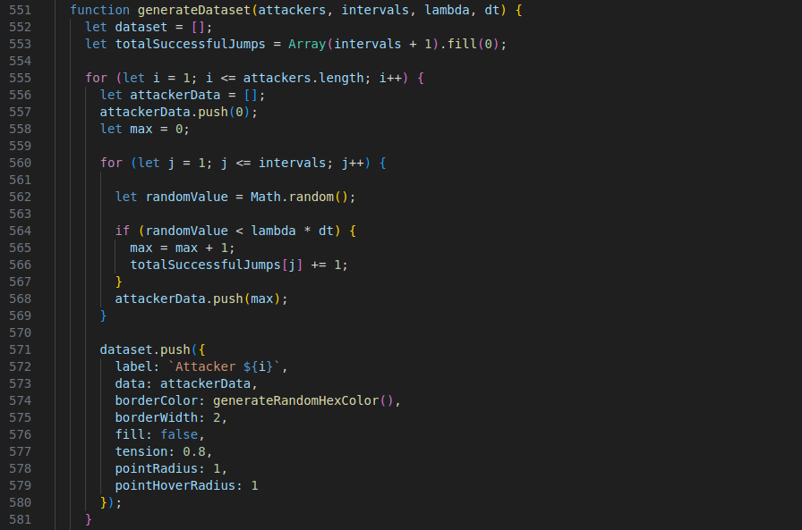
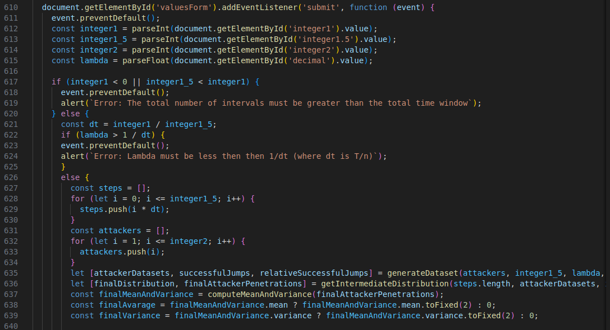

Homework 3
Theory
The Median Minimizes the Sum of Absolute Deviations
We want to show that the median minimizes the sum of absolute deviations, i.e., the median minimizes the expression: \[S(c) = \sum_{i=1}^{n} |x_i - c|\] where \(x_1, x_2, \ldots, x_n \) are data points, and \(c\) is a constant that we are optimizing over.Define the objective function that represents the sum of absolute deviations: \[S(c) = \sum_{i=1}^{n} |x_i - c|\] This function measures how far \(c\) is from each \(x_i\) in terms of absolute deviation.
The absolute value function \(|x_i - c|\) is piecewise linear, and it’s not differentiable at \(x_i = c\). Hence, we cannot minimize \(S(c)\) simply by setting its derivative to 0. We need to use a different approach.
Assume the data points are ordered, so \(x_1 \leq x_2 \leq \ldots \leq x_n\).
Consider moving \(c\) from left to right across the data points:
- When \(c < x_1\), the absolute deviations for all data points are increasing as \(c\) moves to the right.
- When \(c = x_1\), some of the deviations will start to decrease (for points \(x_2, x_3, \ldots, x_n\)), and others will increase (for points to the left of \(x_1\)).
- As c moves through the sorted data, the number of points with increasing deviations (to the right of \(c\)) balances out with those having decreasing deviations (to the left of \(c\)) at the median.
Thus, the median \(M\) minimizes the sum of absolute deviations \(S(c)\). This can be expressed as: \[\arg\min_c \sum_{i=1}^{n} |x_i - c| = \text{median}(x_1, x_2, \ldots, x_n)\]
Conceptual Definitions of “Location” (Central Tendency)
There are various ways to define a “location” or “center” statistic, depending on how one conceptualizes the idea of centrality in a distribution. Below are some common methods, along with potential generalizations.Mean (Arithmetic Average)
Definition
The mean is the sum of all data points divided by the number of points: \[\mu = \frac{1}{n} \sum_{i=1}^{n} x_i\]Properties
Minimizes the sum of squared deviations: \[\mu = \arg\min_c \sum_{i=1}^{n} (x_i - c)^2\]Generalization
The mean is the \(L_2\)-norm-based measure of central tendency, which penalizes larger deviations more than smaller ones.
Median
Definition
The median is the middle value in an ordered dataset.Properties
Minimizes the sum of absolute deviations: \[M = \arg\min_c \sum_{i=1}^{n} |x_i - c|\]Generalization
The median is an \(L_1\)-norm-based measure of central tendency, giving equal weight to all deviations.
Mode
Definition
The mode is the value that occurs most frequently in the dataset.Properties
Represents the most common value and is useful in distributions with repeated values.Generalization
In a continuous distribution, the mode is the peak point of the probability density function (highest frequency of occurrence).
Geometric Mean
Definition
The geometric mean is defined as the n-th root of the product of the data points: \[\text{Geometric Mean} = \left( \prod_{i=1}^{n} x_i \right)^{1/n}\]Properties
Appropriate for data that is multiplicative in nature, or when the data has a log-normal distribution.Generalization
Can be extended to measures where multiplicative relationships dominate, such as growth rates.
Harmonic Mean
Definition
The harmonic mean is the reciprocal of the arithmetic mean of the reciprocals of the data points: \[\text{Harmonic Mean} = \frac{n}{\sum_{i=1}^{n} \frac{1}{x_i}}\]Properties
Useful for rates and ratios, especially in contexts like speed or density.
Trimmed Mean
Definition
The trimmed mean excludes a certain percentage of the smallest and largest values before computing the arithmetic mean.Properties
Robust to outliers and more stable than the regular mean in the presence of extreme values.Generalization
One can vary the proportion of data excluded, leading to different types of trimmed means (e.g., 5% trimmed mean, 10% trimmed mean, etc.).
Winsorized Mean
Definition
Similar to the trimmed mean, but instead of excluding extreme values, the extreme values are replaced by the nearest values that are not extreme.Generalization
The level of Winsorization can vary, allowing for different levels of robustness against outliers.Generalizing “Location” Statistics
Beyond these common measures of central tendency, there are infinitely many ways to define a “location” or
“central tendency” statistic depending on the type of penalties or transformations applied to the data:
\(L_p\)-norm Centrality
Definition
A generalization of the mean and median is the \(L_p\)-norm measure of central tendency: \[c_p = \arg\min_c \sum_{i=1}^{n} |x_i - c|^p\] For \(p = 1\), this gives the median.For \(p = 2\), this gives the mean.
For other values of \(p\), we obtain a different central measure, each putting different weight on larger deviations.
Quantiles
Definition
Quantiles are points that divide the distribution into intervals with equal probabilities. The median is the 50th percentile.Quartiles divide the data into quarters.
Percentiles divide the data into hundredths.
\(M\)-Estimators
Definition
\(M\)-estimators generalize the mean by minimizing a more general loss function \(\rho(x_i - c)\). The classical mean minimizes the quadratic loss (squared deviations), while other \(M\)-estimators may minimize functions that grow more slowly or faster than the quadratic. \[c_{\text{M}} = \arg\min_c \sum_{i=1}^{n} \rho(x_i - c)\]Generalization
By choosing different loss functions \(\rho\), one can create infinitely many different central tendency measures, each with different properties regarding robustness and sensitivity to outliers.Practical
Stochastic Differential Equation simulator refinement
Refine your SDE simulator to simulate a continuous time process where we can have an attack (indicated with a jump of +1) at any time with a constant rate of attack. To create the approximation of time continuity subdivide your reference temporal window into numerous intervals of vanishing size dt = 1/n and to each infinitesimal interval assign a probability of a +1 "jump" (attack success) equal to Lambda * dt, where Lambda is a simulation parameter, having the meaning of expected total number of attacks in the reference period.
Please fill the forms below to generate the chart
Code Explanation
Most of the code is the same as the previous homework. Below there are the only few relevant changes in this homework.
Generate DataSet
As for the second homework, this function simulates the attack process, with few modifications.
Now an attack is simulated for each interval selected by the user.
For each interval, a random value between 0 and 1 is generated using Math.random(). If this value is less than
the probability of lambda * dt (where dt is equal to the Total Time Window/Intervals, both chosen by the user with lambda), the attacker succeeds in penetrating a server (jump
+1)
The results are stored in a ‘dataset’, where each attacker has a line tracking how many servers he has
penetrated as the attack progresses.
In the meanwhile also the number of successful jumps done in each step is saved in an array for the absolute
frequency, and for the relative frequency the latter array is taken and copied to another array by dividing
each element for the total numebr of attempts done in the step (which is the number of attackers).

HTML form to get all together
As for the second homework, when the user submits the form, the values entered for the Total Simulation Time (or Total Time Window)
(integer1), The Total Number of Intervals (integer1_5), the number of
attackers (integer2) and \(\lambda\) (lambda) are
collected.
These values are used to generate the attack data, compute the distribution, mean, variance and
frequencies in order to create or update the graphs.
After the graphs have been created, the value of the mean and variance for both the distribution are
shown.
